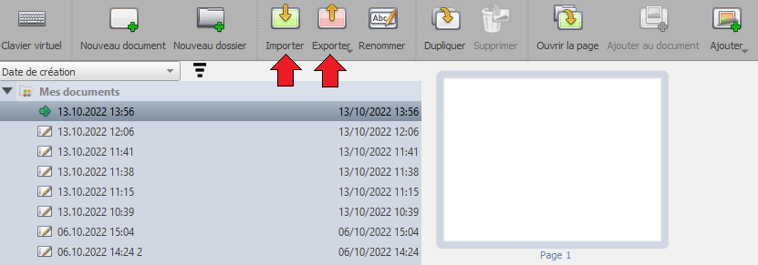

Importieren und Exportieren
In diesem Modus stehen Ihnen zwei wesentliche Funktionen zur Verfügung: Import Und Export.

Inhalte importieren
Sie können Dateien importieren PDF (.pdf), des Bilder (.png, .jpg), des Dokumente OpenBoard (.ubz) oder OpenBoard Ordner (.ubx), indem Sie auf klicken .

Sie können auch ein OpenBoard-Dokument importieren (.ubz) In doppelklicken darauf von Ihrem System. OpenBoard wird bei Bedarf gestartet und bietet den Import an (oder ersetzt ihn, falls er bereits vorhanden ist).
Exportieren Sie Ihre Dokumente
Sie können eine exportieren Dokument OpenBoard im Format PDF Oder UBZ, und a Ordner OpenBoard im Format UBX. Zum Beispiel :
- Zeichnen Sie die während einer Unterrichtsstunde geleistete Arbeit auf und teilen Sie sie mit einem abwesenden Schüler.
- Teilen Sie es mit anderen Lehrern oder speichern Sie es auf einem USB-Stick, um es woanders zu importieren.
- Importieren Sie die Arbeit eines Schülers als PDF, versehen Sie sie mit Anmerkungen und exportieren Sie dann die kommentierte PDF-Datei zum erneuten Senden.